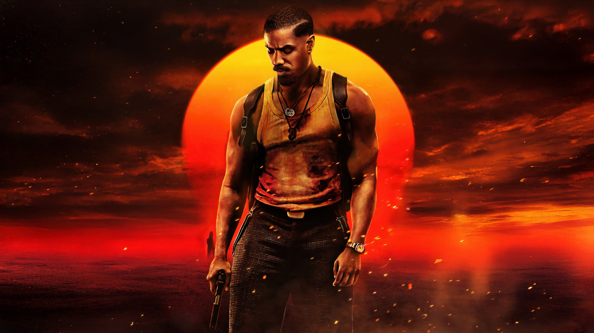
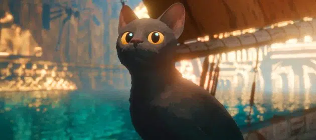

Good Will Hunting
Un film d'une justesse incroyable, porté par des interprétations magistrales. C’est le genre d’œuvre qui rappelle pourquoi le cinéma est un art du partage émotionnel.
Lire plusUn chef-d'œuvre de sensibilité et d'humanité. Un duel émotionnel magistral entre Matt Damon et Robin Williams qui nous rappelle pourquoi on aime le cinéma.
Lire la critique
Un film d'une justesse incroyable, porté par des interprétations magistrales. C’est le genre d’œuvre qui rappelle pourquoi le cinéma est un art du partage émotionnel.
Lire plus
Une réinterprétation viscérale et moderne d'un classique gothique. Emerald Fennell réussit à capturer l'obsession adolescente avec une esthétique sublime.
Lire plus
Un film tendu, sensuel et intelligent, qui transforme le sport en champ de bataille émotionnel. Audacieux dans l’intention.
Lire plus
Un chef-d'œuvre déchirant où la guerre est racontée à hauteur d’enfant. Une œuvre bouleversante et profondément humaine.
Lire plusUn duel viscéral entre maître et élève, où la passion pour la perfection devient une guerre psychologique.
Lire plus
Sinners vous plonge dans un univers où le passé rencontre l'invisible. Une expérience cinématographique incontournable !
Lire plusUne équipe de personnages fascinants qui apporte une nouvelle dimension au MCU, entre lutte intérieure et quête de rédemption.
Lire plus
Robot Sauvage est une réflexion poignante sur la nature humaine. Porté par des effets spéciaux impressionnants et une narration touchante.
Lire plus
Flow est une fable poétique et sensorielle qui parvient à captiver par la puissance de son animation. Une œuvre contemplative.
Lire plus
Un retour fracassant pour le justicier de Hell's Kitchen, mêlant tragédie et ambitions politiques.
Lire plus
Une série animée captivante qui réinvente l'histoire de Peter Parker avec une approche originale.
Lire plus